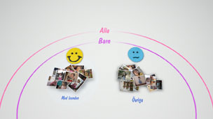
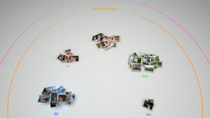

Organisera foton
Gruppera foton
Du kan välja händelser och därefter gruppera fotografier inom dessa valda händelser med något av följande alternativ som beskrivs nedan. Välj de händelser som innehåller de fotografier som du vill gruppera, tryck på  -knappen och välj därefter
-knappen och välj därefter  (Gruppera). Om du vill reducera antalet grupperade fotografier, välj en grupp eller grupper som innehåller fotografier som du vill gruppera, och använd sedan ett annat alternativ under (Gruppera) för att gruppera fotografierna.
(Gruppera). Om du vill reducera antalet grupperade fotografier, välj en grupp eller grupper som innehåller fotografier som du vill gruppera, och använd sedan ett annat alternativ under (Gruppera) för att gruppera fotografierna.
| Datum / Tid | Gruppera efter datum och tid då bilden togs. |
|---|---|
| Antal personer | Gruppera efter antal personer som finns på fotografierna. |
| Åldersgrupp | Gruppera efter den relativa åldern på personerna som finns på fotografierna. |
| Uttryck | Gruppera efter ansiktsuttryck på personer som finns på fotografierna. |
| Färg | Gruppera efter färger som finns på fotografierna. |
| Kameratyp | Gruppera efter kameramodell som användes för att ta fotografierna. |
| Spel | Gruppera efter speltitel. |
| Album | Gruppera efter album som har skapats under  (Foto) i skärmen XMB™. (Foto) i skärmen XMB™. |
Tips!
- Med [Välj alla], kommer alla fotografier i [Biblioteksområdet] att grupperas efter det alternativ som du valt.
- Grupperingen är baserad på en analys av fotografierna och kan i vissa fall ge resultat som du inte förväntat dig.
- Du kan skapa en spellista med de grupperade fotografierna.
Exempel på grupperade foton: Foton på barn som ler
1. |
Gruppera fotografier genom att välja |
|---|---|
2. |
Välj den grupp som är märkt [Barn], och tryck sedan på |
3. |
Välj  |
Exempel på grupperade foton: Fotografier med blå himmel
1. |
Gruppera fotografier genom att välja |
|---|---|
2. |
Välj den grupp som är märkt [Landskap/Övriga], och tryck sedan på |
3. |
Välj  |
Radera foton
För att ta bort ett foto eller album, välj det foto eller album som du vill ta bort, tryck på och välj därefter  (Radera).
(Radera).
Tips!
Om du raderar foton i [Biblioteksområdet], kommer fotona också att raderas från PS3™-systemets lagringsminne.